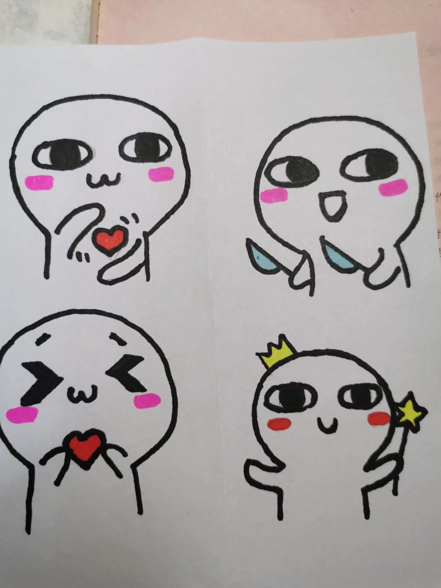
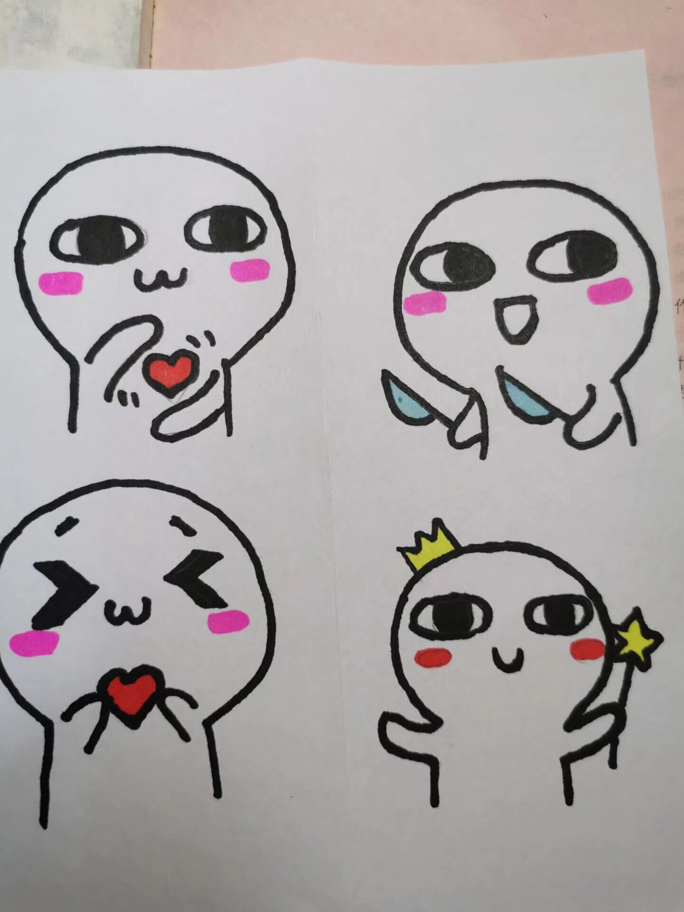

大家对小罗的评价
评价绝对良心，真实有效····
评论者：瑶瑶
小罗真的超级帅~ 
小罗才华的进度条
莎莎的观点
想当年，白衣飘飘、云裳素袖、羽扇纶巾、环佩铿锵、狮鼻大口、素面朝天、玉树可临风、频向天涯搔首，既上得了厅堂又下得了厨房。
再康现在，政治合格，军事过硬;爱情忠贞，品德高尚;立场坚定，斗志昂扬;身体倍儿棒，吃嘛嘛香。
工作一丝不苟，生活两袖清风;学习三心二意;情感四面楚歌!
在家团结朋友，出门孝敬父母;只艰苦不朴素，只吃喝不嫖赌;白天文明不精神，晚上精神不文明!
男模的身材;军人的气质;绅士的风度;博士的学识，骑士的德操，壮士的胸怀!
哎呀，不行了，不能再说了，再说下去怕你们过于崇拜我。
评价绝对良心，真实有效····
小罗真的超级帅~ 
莎莎的观点